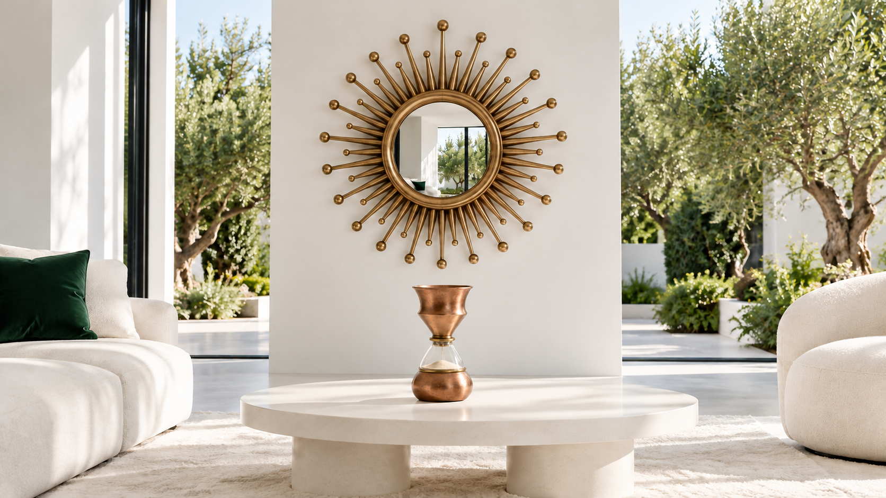

The White Morning Salon

View Flow prompt
Animate the supplied starting-frame image into an approximately eight-second, photorealistic, cinematic background film for the homepage of Aurelio by AF International, a family atelier in Moradabad, India, that makes heirloom furniture, lighting, vessels, kitchenware and decorative objects by hand in brass, copper, bronze, patinated steel, blown glass and seasoned wood. The supplied image is the exact first frame and the visual source of truth: every product keeps its shape, proportions, construction, finish, colour, scale and position for the whole shot. Products are rigid, solid, hand-made objects: they never bend, melt, morph, flicker, duplicate, change their pattern or texture, or drift. Do not add new products, people, animals, text, logos or signage beyond what is described below. Reveal only a little new space, consistent with the first frame. Keep the first frame's look: modern premium solid-white architecture and supporting surfaces (#FFFFFF, #F2F2F2) with restrained Aurelio deep-green (#072319, #0D3325) accents and living foliage. Preserve exact brass, copper, glass and patina colours from the image, neutral daylight, stable exposure and white balance, realistic shadows and physically correct reflections. White stays clean and solid, never beige. No grading shifts, environmental haze, fog, artificial sparkle, lens flare or HDR. Local candle flames, wick flame, fine taper smoke or cup steam appear only when specified by this scene. Shot: a slow centred push-in along the room axis. The sheer white curtains breathe gently, garden leaves stir, and soft daylight shifts subtly. Mirror and hourglass vessel stay rigid and fixed, with physically correct reflection changes. End on a balanced centred view of the full arrangement. Camera and pacing: one continuous take in landscape 16:9, with no cuts, transitions, time-lapse or speed ramps. The camera moves slowly, smoothly and steadily, as on a dolly, slider or small crane; no handheld shake, sudden acceleration, zoom snaps, whip pans, focus hunting or spinning products. The only motion is the camera move and the gentle living details described below (light, air, water, leaves, fabric, steam, and hands where described), so the film feels alive yet calm and can loop quietly behind a website. Keep the top-centre and bottom-centre bands calm and uncluttered for the website's wordmark and buttons, and keep the hero product near the vertical centre line throughout so a phone crop still shows it. Settle into a composed, balanced frame and hold it steady for the final second. No subtitles, titles, captions, watermarks, logos or letterboxing. No music, voice-over or dialogue; if audio is produced, only faint natural ambience. The film must work completely muted.
Products and adaptations
Missing catalogue furniture and pendant replaced by plain white supporting furniture; supplied ray mirror and hourglass vessel are the featured objects.
product_076_ray_mirror.jpg
product_011_hourglass_vessel.jpg